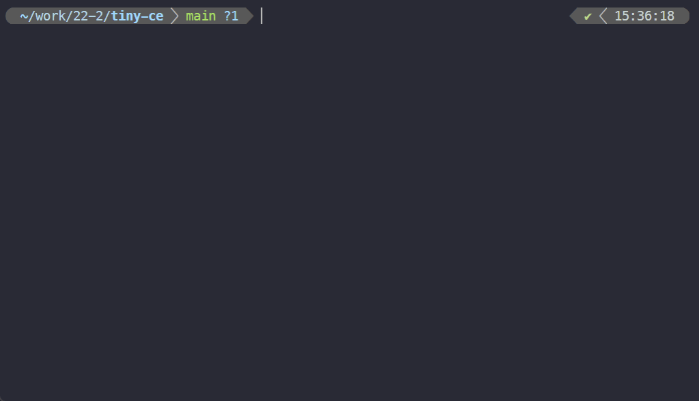
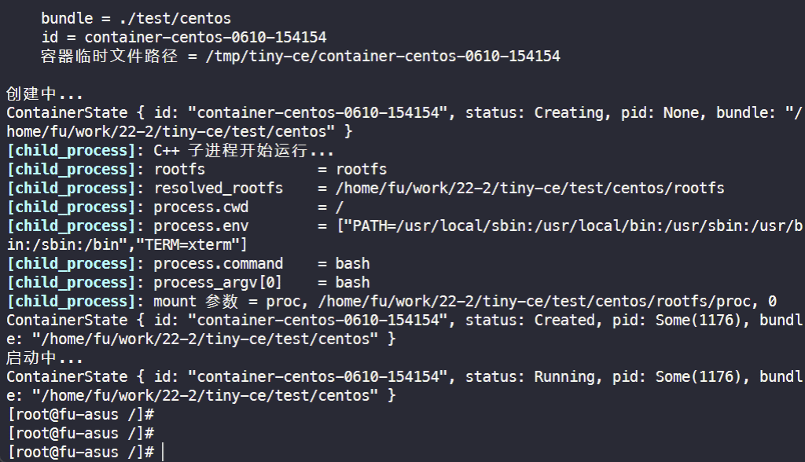
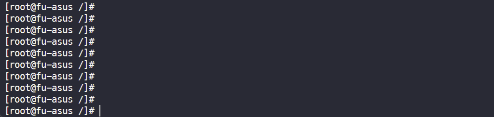
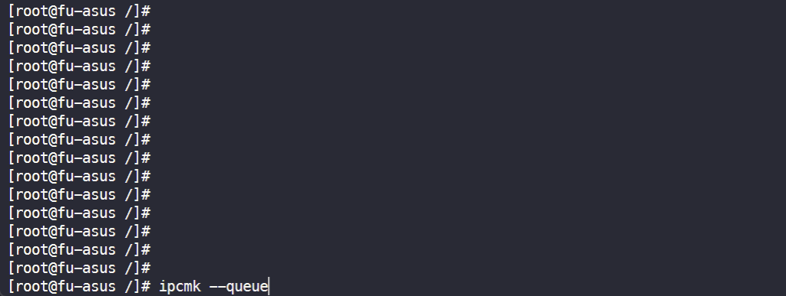
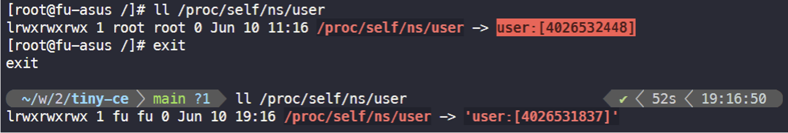
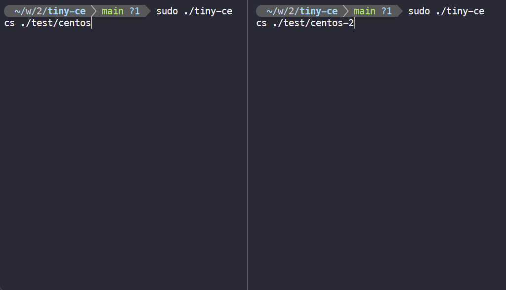
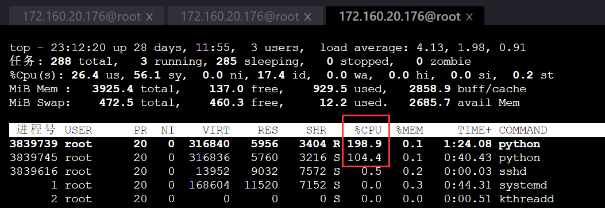

Tiny CE
一个使用 Rust 和 C++ 编写, 基于 Linux 系统调用实现的一个容器引擎, 支持 OCI 标准的一个子集.
为何选用 Rust 与 C++ 开发?
我们希望尽量减少对环境和第三方工具的依赖, 仅仅通过底层系统调用, 实现一个高效的容器引擎. 从这点来看, Rust 和 C++ 都是非常合适的选项, 它们不仅擅长精确地与 OS 打交道, 而且有着大量零开销抽象的设计, 特别是 Rust 和 C++ 17 的一些现代语言特性, 能让我们以一种更为轻松、富有表达力的方式编写引擎.
话虽如此, 我们还没有底层到直接用 syscall 或中断来发起系统调用. 在 Rust 和 C++ 中, 我们分别使用了 nix 和 glibc 库, 它们都是对 Linux 系统调用的一层薄薄的封装.
Tiny CE 支持的 OCI 标准子集, 具体是什么?
在本文后续章节中, 我们测试了 Tiny CE 支持的 OCI 标准子集的大部分特性. 关于这一子集的完整文档, 可以在 tiny-ce-repo/docs/tiny-ce-spec.md 找到.

从源码编译
要从源码编译, 请访问我们托管于 github.com/FuuuOverclocking/tiny-ce 的项目, 遵循 README.md 中的编译指示.
测试
若要复现测试, 只需在 ./test/centos/rootfs 和 ./test/centos-2/rootfs 准备 CentOS 容器的根目录.
1. 基础测试
$ ./test/network_prepare.sh $ sudo ./tiny-ce cs ./test/centos # 启动该 bundle 代表的容器, ./test/centos/config.json 是 bundle 的配置文件
检查 PID 命名空间:
检查 mount 命名空间:
检查 UTS 命名空间:
检查 IPC 命名空间:
关于 user 命名空间
Rootless 容器
Rootless 容器是指非特权用户创建, 运行和以其他方式管理容器的能力. 该术语还包括围绕容器的各种工具, 这些工具也可以作为非特权用户运行. Docker 从 19.03 版本开始提供对 Rootless 的部分支持, 从 20.10 版本开始提供全面支持.
Rootless 在 user namespace 方面, 体现为将容器内的 root (uid = 0) 用户映射到容器外的 non-root 用户.
Rootless 技术由于缺少 root 权限, 在挂载、创建设备以及访问网络方面需要更多工具的配合. 顾虑到其复杂性, 我们未提供对它的支持.
此外, 由于我们遵照 OCI 标准实现了该引擎, 在容器进程初始化过程中各项系统调用几乎都需要 SYS_CAP_ADMIN 能力, 因此不支持 uid/gid mapping 设置为 0 0 n 以外的值. 简而言之, 在 Tiny CE 中, 你只能将 root 用户映射为 root 用户😂!
尽管始终为 root 用户, 但容器内外处在不同的 user 命名空间中:

请注意区分 config.json 的 process.user.uid/gid 与 linux.uidMappings/gidMappings, 尽管仅能将 root 映射到 root, 以 root 用户启动子进程, 但容器仍然能在运行 entry point 之前切换到 process.user 指定的用户.
2. 测试两个容器之间的网络连通性
# 事先准备好两个网络命名空间后, 在两个终端分别执行 $ sudo ./tiny-ce cs ./test/centos $ sudo ./tiny-ce cs ./test/centos-2 $ ping 10.0.0.2 # 在容器 test/centos 执行 $ ping 10.0.0.1 # 在容器 test/centos-2 执行
3. 通过 CGroups 限制资源
Python 测试脚本, 可以占满服务器的 4 核 CPU:
两个容器的 cpu.shares 分别被设置为 3072 和 1024:
通过 top 命令, 可看到两个容器占用的 CPU 不平等:
在内存测试上, 我们遇到了一些问题, 这可能与 tiny-ce 没有正确设置 oom killer 有关.
原理
1. 创建 network namespace 并准备设备
OCI 标准并不包括网络相关的设置, 因此我们事先单独执行一个 shell 脚本来准备网络设备和命名空间.
test/network_prepare.sh:
- 创建两个 network namespace
- 为两个 network namespace 分别准备 veth 对
- 在 host 上创建一个 bridge, 并将 veth 放入
详细如下:
sudo ip netns add tiny-ce-0(1) # 添加两个新的 network namespace sudo ip link add tiny-ce-br type bridge # 添加 bridge sudo ip link set dev tiny-ce-br up # 启动 bridge sudo ip link add ce-0(1)-container type veth peer name ce-0(1)-host # 添加两对 veth pair sudo ip link set dev ce-0(1)-container netns tiny-ce-0(1) # veth 一侧连接 network namespace sudo ip netns exec tiny-ce-0(1) ip link set dev ce-0-container name eth0 # 对设备命名 sudo ip netns exec tiny-ce-0(1) ip addr add 10.0.0.1(2)/24 dev eth0 # 对设备分配 ip sudo ip netns exec tiny-ce-0(1) ip link set dev eth0 up # 启动设备 sudo ip link set dev ce-0(1)-host master tiny-ce-br # veth 另一侧连接 bridge sudo ip link set dev ce-0(1)-host up # 启动设备 sudo ip addr add 10.0.1.0/24 dev tiny-ce-br # 对 bridge 分配 ip，事先停止 bridge，分配 ip 后重新启动 bridge
2. Rust 部分
fn create(id: &String, bundle: &String); // 创建一个容器 fn start(id: &String); // 启动一个容器 fn delete(id: &String); // 删除一个容器
2.1 create(id, bundle)
使用目录 bundle 创建一个容器, 并指定其 id.
总体流程如下:
- 读入并解析
{bundle}/config.json - 创建该容器的临时文件夹
{CONTAINER_ROOT_PATH}/{容器 id}, 在其下创建state.json记录容器的状态 - 启动一个 Unix domain socket 并监听, 路径为
{container_path}/init.sock - 调用 C++ 函数
setup_args(), 提供子进程运行所需参数 - 在堆上分配 4MB 空间, 作为子进程的栈空间
- 依据需要隔离的命名空间, 指定 clone_flags, 调用 clone(2), 启动共享内存的子进程
- 创建 cgroup, 设置资源限制, 并加入子进程的 pid
- 依据父子进程通信内容, 执行不同的动作, 详见 2.3 节
- 容器完成创建, 更改 state, 并保存到
state.json
2.2 start(id, bundle)
启动指定 id 的容器.
原理为, 通过 {container_path}/container.sock, 向容器发送 "start".
2.3 父子进程通信过程
2 个 Unix domain socket 的作用分别是:
{container_path}/init.sock:- server: runtime 进程, client: container 进程
- 当 container 成功启动, 并开始在
{container_path}/container.sock上监听时, container 发送"ok"
{container_path}/container.sock:- server: container 进程, client: runtime 进程
- container 将 accept 两次, 第一次发生在
create()中, 第二次发生在start()中 - 在
create()中:- runtime <- container: 若发生错误, 发送
/error:.*/ - runtime -> container: 完成 uid/gid mapping 的写入后, 发送
"mapped" - runtime <- container: 在 pivot_root(2) 之前, 发送
"pivot?" - runtime -> container: 收到
"pivot?"后, 发送"ok" - runtime <- container: 准备就绪, 可以 start 时, 发送
"ready"
- runtime <- container: 若发生错误, 发送
- 在
start()中:- runtime -> container: 发送
"start"
- runtime -> container: 发送
2.4 delete(id, bundle)
删除指定 id 的容器. 容器进程必须已经结束运行.
3. C++ 部分
C++ 相关代码放在 src/cpp/ 文件夹下，主要包括三个部分：
libcgroups实现了一个简单的 cgroup 功能测试libnetns实现了一个简单的 network namespace 功能测试child_process负责子进程处理的主要流程，包括进入以后的通信、创建各项资源、设置对应环境、运行实际程序等等一系列的操作
3.1 child_process
整体流程
在外层的 Rust 部分与 C++ 部分交互的主要函数在 entry.cpp 文件中，通过 exports.hpp 将对应的函数暴露给 Rust，Rust 会首先调用 entry.cpp 中的 setup_args 设置好对应的参数，包括
config：通过 nlohmann/json 库解析得到的 config 对应 json 文件config_path：config 文件的路径init_lock_path：与主进程建立通信用的 sock 路径sock_path：在创建阶段由子进程创建并监听的 sock 路径，接受包括开始以及切换根目录相关的通信- 其余参数在子进程运行阶段被创建并使用，在这里不多做介绍
而后 Rust 调用 clone 系统调用创建新的子进程，在子进程中会运行 child_main 函数。
函数首先根据 config 解析得到将要运行的容器系统的根目录 rootfs，同时解析得到最终容器将要运行的命令、对应参数、以及环境变量等等。
assert(args != nullptr); // debug.curr_debug_level = DebugLevel::Warn; // 令其只打印 warn, error debug.info("C++ 子进程开始运行..."); auto rootfs = args->config["root"]["path"].get<string>(); auto resolved_rootfs = resolve_rootfs(args->config_path, rootfs); args->resolved_rootfs = resolved_rootfs; auto process_cwd = args->config["process"]["cwd"].get<string>(); auto process_env = args->config["process"]["env"]; assert(process_env.is_array()); auto process_args = args->config["process"]["args"]; assert(process_args.is_array()); auto process_command = process_args[0].get<string>(); auto process_argv = args_to_argv(process_args); auto process_argv_len = process_args.size();
而后运行一系列的中间件，设置好容器运行所需要的所有环境。
ExecuteMiddleware(args);
配置好环境后，通过 fork 系统调用，子进程创建自己的子进程，通过 execvp 执行真正要运行的命令，同时子进程会等待客户命令运行结束，并向主进程发送结束信号从而停止容器运行。
auto pid = fork(); expect(pid != -1, "fork 失败"); if (pid == 0) { execvp(process_command.c_str(), process_argv); } else { int status = 0; wait(&status); SendExit(args); }
middleware
运行过程中最主要的部分是不同的中间件的运作，中间件的格式都在 middleware.hpp 中定义，同时在这里声明了所有的中间件。
typedef void (*Middleware)(ChildProcessArgs *args); void ExecuteMiddleware(ChildProcessArgs *args);
中间件的实现都放到了对应的 cpp 文件中，而实际执行时，在 middleware.cpp 中定义的 fn_array 定义了中间件的实际执行顺序，在 ExecuteMiddleware 中被逐个执行。
void ExecuteMiddleware(ChildProcessArgs *args) { for (auto fn : fn_array) { fn(args); } }
具体执行的每个中间件会按顺序在下文解释。
PrepareSocket
函数在 socket.cpp 文件中定义，主要负责建立与主进程的 IPC 通信过程。
void PrepareSocket(ChildProcessArgs *args) { initSocket(args); containerSocket(args); const char *init_msg = "ok"; auto write_bytes = write(args->init_lock_sock, init_msg, strlen(init_msg)); assert(write_bytes != -1); close(args->init_lock_sock); }
initSocket 函数根据传入的参数建立客户端 socket，在 bind 后 connect，建立与主进程的 socket 通信。
containerSocket 函数根据参数建立新的服务端 socket，在 bind 后 listen 监听，由于在此时不调用 accept，也就不会阻塞。在子进程建立 socket 是由于主进程会经过多个阶段，因此需要子进程作为服务侧，监听不同阶段的主进程连接。
在 socket 都准备好后，通过调用 write 函数，向 init socket 发送信息 ok，表示 socket 建立过程已经结束，发送成功后关闭 init socket。
ConnectRuntime
函数在 socket.cpp 中定义，负责建立起以子进程为服务侧的 IPC 通信过程
void ConnectRuntime(ChildProcessArgs *args) { sockaddr_un runtime_un; socklen_t accept_un_size = sizeof(runtime_un); args->container_receive_runtime_sock = accept(args->container_sock, (sockaddr *)&runtime_un, &accept_un_size); assert(args->container_receive_runtime_sock != -1); }
通过调用 accept，并将对应的文件描述符存储到 container_receive_runtime_sock，建立起在上一步中子进程监听的 socket 的通信。
CheckUserMapping
函数在 communication.cpp 中定义，我们约定如果 config 文件中如果存在 namespace 的 user 项并且 path 为空，即有如下形式
{ "linux":{ "namespaces":[ { "type":"user" } ] } }
那么主进程会写入对应的 uid/gid mapping，之后发送 mapped。
void CheckUserMapping(ChildProcessArgs *args) { auto args_ns = args->config["linux"]["namespaces"]; assert(args_ns.is_array()); for (auto &ns : args_ns) { if (ns["type"].get<string>() == "user") { if (ns["path"].is_null()) { char *buf = new char[BUF_LEN]; auto read_bytes = read(args->container_receive_runtime_sock, buf, sizeof(buf)); expect(read_bytes != -1, "read container.sock 时发生错误"); expect(strcmp(buf, "mapped") == 0, "期望从 container.sock 接收到 mapped, 意外接收到 ", buf); delete buf; } break; } } }
函数会检查是否存在对应项，如果需要的话等待主进程完成并发送信息。
SetProcessId
函数定义在 process_info.cpp 中，根据 config 文件的 user 项来设定子进程的 uid 以及 gid。
{ "process":{ "user":{ "uid":0, "gid":0 } } }
通过调用系统调用 setuid 和 setgid 实现。
void SetProcessId(ChildProcessArgs *args) { auto process = args->config["process"]; auto user = process["user"]; auto uid = user["uid"].get<uid_t>(); auto gid = user["gid"].get<uid_t>(); auto err = setuid(uid); assert(err != -1); err = setgid(gid); assert(err != -1); }
SetNetworkNamespace
函数定义在 network.cpp 中，当 config 中的 namespace 的 network 项存在 path 时，表示有指定的 network namespace，需要切换当前子进程的 namespace。
{ "linux":{ "namespaces":[ { "type":"network", "path":"/var/run/netns/tiny-ce-0" } ] } }
通过系统调用 setns 实现切换到指定的 namespace 功能
for (auto &ce_namespace : namespaces) { if (ce_namespace["type"].get<string>() != "network") { continue; } if (ce_namespace["path"].is_null()) { return; } auto path = ce_namespace["path"].get<string>(); auto fd = open(path.c_str(), O_RDONLY | O_CLOEXEC); auto err = setns(fd, CLONE_NEWNET); assert(err == 0); }
MountRootfs
函数定义在 mount.cpp 中，根据 pivot_root 系统调用的解释，为了切换根目录，需要提前进行一些操作。
void MountRootfs(ChildProcessArgs *args) { auto err = mount(NULL, "/", NULL, MS_REC | MS_PRIVATE, NULL); assert(err == 0); err = mount(args->resolved_rootfs.c_str(), args->resolved_rootfs.c_str(), NULL, MS_BIND | MS_REC, NULL); assert_perror(errno); }
函数使用了 mount 系统调用，第一个 mount 目的是保证新的根目录和它的父级目录在当前新建的 mount namespace 下都不是 share 的，否则 pivot_root 调用会报错，第二个 mount 目的是保证新的根目录是一个挂载点，否则 pivot_root 同样会报错。
MountDevice
函数定义在 mount.cpp 中，根据 config 文件中的 mounts 项来将每个对应的设备/文件系统等挂载到对应位置。
{ "mounts": [ { "destination": "/proc", "type": "proc", "source": "proc" } ] }
函数使用了 mount 系统调用，其中 source 即为配置对应项，target 即为新的根目录地址加上 destination 项，fs_type 即为配置项的 type 项，flag 使用 MS_BIND 表示当前操作为 bind 操作。
auto dest = entry["destination"].get<string>(); dest = args->resolved_rootfs + dest; unsigned long flag = 0; if (entry["type"].get<string>() == "bind") { flag |= MS_BIND; } debug.info("mount 参数 = ", entry["source"].is_null() ? NULL : entry["source"].get<string>().c_str(), ", ", dest.c_str(), ", ", flag); auto source = entry["source"].is_null() ? NULL : entry["source"].get<string>().c_str(); auto target = dest.c_str(); auto fs_type = entry["type"].is_null() ? NULL : entry["type"].get<string>().c_str(); auto err = mount(source, target, fs_type, flag, NULL); assert_perror(errno); assert(err == 0);
CreateDevice
函数定义在 device.cpp 中，根据 config 文件中的 devices 项来创建对应设备，过程使用 mknod 系统调用。
void CreateDevice(ChildProcessArgs *args) { if (args->config["linux"]["devices"].is_array()) { for (auto &device : args->config["linux"]["devices"]) { CreateSingleDevice(device, args->resolved_rootfs); } } }
在当前测试中，由于并没有添加额外的设备，因此该中间件没有实际效果。
CreateDefautDevice
函数定义在 device.cpp 中，根据 OCI 标准，Linux 容器无论是否创建其他设备，都需要创建默认的设备，包括如下几项：
- /dev/null
- /dev/zero
- /dev/full
- /dev/random
- /dev/urandom
- /dev/tty
- /dev/ptmx
因此在 device.cpp 中我们定义了 default_devices 项来存储相关默认设备的信息，并通过 mknod 系统调用创建设备。
void CreateDefautDevice(ChildProcessArgs *args) { for (auto &device : default_devices) { CreateSingleDevice(device, args->resolved_rootfs); // BindSingleDevice(device, args->resolved_rootfs); } }
设备的配置项如：
[ { "path":"/dev/null", "type":"c", "major":1, "minor":3, "file_mode":"0666", "uid":0, "gid":0 } ]
在 CreateSingleDevice 函数中，函数根据读取到的 path 加上新的根目录路径得到新的 path，根据 type 和 file_mode 得到调用时的 mode 项，并加载好对应信息。
auto path = rootfs + device["path"].get<string>(); auto mask = device["file_mode"].get<string>(); auto mode = toDeviceMode(device["type"].get<string>()[0]) | strtoul(mask.c_str(), NULL, 8); dev_t dev = makedev(device["major"].get<int64_t>(), device["minor"].get<int64_t>()); auto err = mknod(path.c_str(), mode, dev); assert(err == 0);
之后根据配置项是否给定 uid 和 gid，在分别调用 chown 系统调用改变拥有关系
if (!device["uid"].is_null()) { err = chown(path.c_str(), device["uid"].get<uid_t>(), -1); assert(err == 0); } if (!device["gid"].is_null()) { err = chown(path.c_str(), -1, device["gid"].get<gid_t>()); assert(err == 0); }
SymlinkDefault
函数定义在 symlink.cpp 中，根据 OCI 标准，在创建容器时在 mount 后需要创建一系列的符号链接，包括
- /proc/self/fd >> /dev/fd
- /proc/self/fd/0 >> /dev/stdin
- /proc/self/fd/1 >> /dev/stdout
- /proc/self/fd/2 >> /dev/stderr
同样我们将关系定义在 default_symlinks 中，通过 symlink 系统调用来完成符号链接
void SymlinkDefault(ChildProcessArgs *args) { for (auto &link : default_symlinks) { auto link_path = args->resolved_rootfs + link["linkpath"].get<string>(); auto target = link["target"].get<string>(); auto err = symlink(target.c_str(), link_path.c_str()); assert_perror(errno); assert(err == 0); } }
CheckPivot
定义在 communication.cpp 中，在切换根目录前，子进程会与主进程通信，子进程发送 pivot? 信息询问，当收到主进程回复的 ok 后开始切换过程
void CheckPivot(ChildProcessArgs *args) { const char *check_msg = "pivot?"; auto write_bytes = write(args->container_receive_runtime_sock, check_msg, strlen(check_msg)); assert(write_bytes != -1); char *buf = new char[BUF_LEN]; auto read_bytes = read(args->container_receive_runtime_sock, buf, sizeof(buf)); assert(read_bytes != -1); expect(strcmp(buf, "ok") == 0, "期望从 container.sock 接收到 ok, 意外接收到 ", buf); delete buf; }
PivotRootfs
定义在 mount.cpp 中，实现真正的切换根目录过程，涉及的系统调用包括 chdir、mkdir、pivot_root、umount2、rmdir。
static int pivot_root(const char *new_root, const char *put_old) { return syscall(SYS_pivot_root, new_root, put_old); } void PivotRootfs(ChildProcessArgs *args) { auto err = chdir(args->resolved_rootfs.c_str()); assert(err == 0); auto old_path = args->resolved_rootfs + "/oldrootfs"; err = mkdir(old_path.c_str(), 0777); assert(err == 0); err = pivot_root(args->resolved_rootfs.c_str(), old_path.c_str()); assert(err == 0); err = chdir("/"); assert(err == 0); err = umount2("./oldrootfs", MNT_DETACH); assert(err == 0); err = rmdir("./oldrootfs"); assert(err == 0); }
- 切换目录到新的根目录的位置
- 创建为了保存旧的挂载点而建立的目录
oldrootfs - 调用
pivot_root真正切换根目录位置 chdir确保当前工作目录位置umount2卸载掉旧的挂载点rmdir删除临时目录
SetHostName
函数定义在 process_info.cpp 中，通过调用 sethostname 系统调用切换当前的 hostname。
void SetHostName(ChildProcessArgs *args) { auto hostname = args->config["hostname"].get<string>(); auto err = sethostname(hostname.c_str(), strlen(hostname.c_str())); assert(err == 0); }
SetEnv
函数定义在 process_info.cpp 中，通过调用 putenv 系统调用来加载 config 配置项中指定的环境变量。
void SetEnv(ChildProcessArgs *args) { auto err = clearenv(); assert(err == 0); for (auto &env : args->config["process"]["env"]) { char *buf = new char[BUF_SIZE]; strcpy(buf, env.get<string>().c_str()); err = putenv(buf); assert(err == 0); } }
GetReady
函数定义在 communication.cpp 中，在完成上述设置后，容器已设置好环境，向主进程发送 ready 表示 create 过程结束，等待主进程进入 start 阶段
void GetReady(ChildProcessArgs *args) { const char *ready_msg = "ready"; auto write_bytes = write(args->container_receive_runtime_sock, ready_msg, strlen(ready_msg)); assert(write_bytes != -1); }
ConnectRuntime
由于主进程需要切换到 start 状态，因此先前建立的连接会关闭，子进程需要重新 accept 与主进程建立连接
CheckStart
函数定义在 communication.cpp 中，子进程等待主进程发送 start 消息，主进程发送该消息后表示允许子进程正常开始运行
void CheckStart(ChildProcessArgs *args) { char *buf = new char[BUF_LEN]; auto read_bytes = read(args->container_receive_runtime_sock, buf, sizeof(buf)); assert(read_bytes != -1); auto str = string_view(buf, read_bytes); expect(str == "start", "期望从 container.sock 接收到 start, 意外接收到 ", buf); delete buf; }
SetDir
函数定义在 process_info.cpp 中，根据 config 中的 cwd 项来将进程位置切换到对应目录
void SetDir(ChildProcessArgs *args) { auto cwd = args->config["process"]["cwd"].get<string>(); auto err = chdir(cwd.c_str()); assert(err == 0); }
3.2 libcgroups
使用 systemd 作为 cgroup 管理器。通过 systemd 创建服务，并对其进行资源控制。
cgroup 管理器有 cgroupfs 和 systemd 两种，Docker 和 k8s 都建议使用 systemd 来管理资源。
cgroupfs 封装了 cgroup 的原生接口，是一种虚拟文件系统，默认挂载在 /sys/fs/cgroup 下。
systemd 是守护进程，在系统启动时以 pid 1运行，系统上运行的所有进程都是 systemd init 进程的子进程。systemd 同样封装了 cgroup 的接口。systemd-cgls 可以以树的形式递归显示指定 control group 的层次结构。
├─1 /usr/lib/systemd/systemd --switched-root --system --deserialize 20 ├─user.slice │ └─user-1000.slice │ └─session-1.scope │ ├─11459 gdm-session-worker [pam/gdm-password] │ ├─11471 gnome-session --session gnome-classic │ ├─11479 dbus-launch --sh-syntax --exit-with-session │ ├─11480 /bin/dbus-daemon --fork --print-pid 4 --print-address 6 --session │ ... │ └─system.slice ├─systemd-journald.service │ └─422 /usr/lib/systemd/systemd-journald ├─bluetooth.service │ └─11691 /usr/sbin/bluetoothd -n ├─systemd-localed.service │ └─5328 /usr/lib/systemd/systemd-localed ├─colord.service │ └─5001 /usr/libexec/colord ├─sshd.service │ └─1191 /usr/sbin/sshd -D │ ...
Systemd 提供了三种用于资源控制的 unit 类型：service 服务、scope 范围和 slice 切片，为 cgroup 树提供统一的结构。
service：一个或一组进程，systemd 基于 unit 配置文件启动 service。服务封装了指定的进程，以便它们可以作为一组启动和停止。
scope：一组外部创建的进程。scope 封装了由任意通过 fork() 函数启动和停止的进程，然后在运行时由 systemd 注册。例如，用户会话、容器和虚拟机被视为作用域。
slice：一组分层组织的单元。切片不包含进程，它们组织了一个层次结构，其中放置了 scope 和 service。在这个层次树中，切片单元的每个名称都对应于层次结构中某个位置的路径。
systemd 会自动在 /sys/fs/cgroup/ 目录中挂载重要内核资源控制器的层次结构。systemd 在 /sys/fs/cgroup/systemd 维护自己使用的非 subsystem 的 cgroups 层级结构。
方案一是直接创建一个 service，当前进程会自动加入 service，在 service 修改 Unit 文件，以完成对该 service 的资源限制。具体实现：
通过 vim /etc/systemd/system/service_name.service 创建 service，并把要求的配置写入 unit 文件。其中，创建 service 一定需要一个可执行文件用以运行，其对应的参数例如 ConditionFileIsExecutable 和 ExecStart 等。在 systemd 中，资源限制是可选项。如何在 service 中开启呢？unit 中加入 CPUAccounting=yes，就开启了 cgroup 的 cpu 的资源管理统计选项，其他资源类似。需要限制 CPU 的使用时，在 unit 中加入具体限制字段即可，例如 CPUQuota=40%。修改完 unit 配置文件后，重新加载 service 的配置文件 systemctl daemon-reload，重启服务 systemctl restart service_name.service，即可完成对 service 的资源限制。对 cpu 的部分限制可以在 mpstat -P ALL 1 3 观察到效果，对 memory 的部分限制可在 systemctl status service_name 中看到。
实现上使用 c 语言编写，使用 system 函数，将想要执行的 linux 命令传入，程序跑起来后 linux 读取到对应命令并执行。同时，使用文件操作命令，例如 fopen 等，直接在 linux 对应位置创建文件。
但由于要求为多个进程进行同一种资源限制，service 仅对一个应用程序进行限制，不符合要求。
3.3 libnetns
借助 ip 命令来完成对 network namespace 的操作。ip 命令来自于 iproute2安装包。创建 network namespaceip netns add network_namespace_name 对于每个 network namespace，它会有自己独立的网卡、路由表、ARP 表、iptables 等和网络相关的资源。ip netns exec network_namespace_name 命令可以在对应的 network namespace 中执行命令，且不只是与网络相关的。默认情况下，network namespace 是不能与主机，或与其他 network namespace 通信的。
libnetns 实现了方案一，但是在实际使用过程，由于需要实现容器间通信的功能，在子进程阶段创建 network namespace 会使得对应的 namespace 难以控制，因此我们实际采用方案二作为实际运行方案。
方案一
要把两个network namespace 网络连接起来，可以使用 veth pair。可以把 veth pair 当做是双向的 pipe（管道），从一个方向发送的网络数据，可以直接被另外一端接收到。使用 ip link add type veth 创建一对 veth pair，也可指定 vetn pair 的名字。把这对 veth pair 分别放到两个 namespace 里面 ip link set DEV netns NAME。最后，给这对 veth pair 配置上 ip 地址，并启用它们。最后，启用这对 veth pairip netns exec NAME ip link set DEV up，配置上 ip 地址 ip netns exec NAME ip addr add ip_address dev DEV 。
实现上使用 c 语言编写，使用 system 函数，将想要执行的 linux 命令传入，程序跑起来后 linux 读取到对应命令并执行。
方案二
通过在执行程序前运行 prepare_network.sh，提前创建好两个独立的 network namespace 和一个 bridge，每个 network namespace 都通过一对 veth pair 连接到 bridge 上，使得不同的 network namespace 之间能够相互通信，通过在 config 文件中指定要加入的 network namespace，在子进程运行阶段进入对应 namespace。